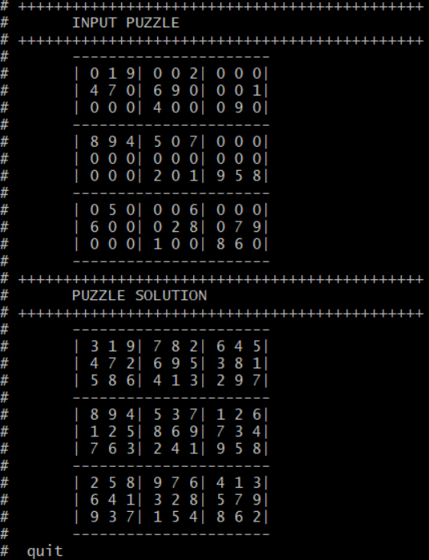

This is a blog where I share some of my projects and other cool stuff that I'm currently working on...
About
________
I am currently a grad student at Portland State University majoring in Electrical and Computer Engineering.
I have a penchant for anything Design Verification related and am currently seeking opportunities in the same.
Email: ✉
This site is under maintenance..
Though I haven't solved sudoku puzzles much in the past... I got this crazy idea of writing a SystemVerilog program to solve a sudoku puzzle, when I was sitting in a class trying to solve a Sudoku puzzle put up by the professor during the class break.
I started looking up different algorithms which could do this and 'backtracking' seemed to be the most popular and easiest implementation. Though it is highly inefficient and recursive, with the high speed processors of today one could easily brute force a sudoku puzzle in seconds using this approach. Hence i decided to implement the same in SystemVerilog.
Though other implementations which use constrained randomization to solve a Sudoku puzzle do exist, I was curious to try this out for myself to see if a recursive backtracking implementation would actually work in SystemVerilog.And it comes as no surprise that it actually works quite well.
The SystemVerilog code which solves a given sudoku puzzle through backtracking and it's corresponding output are shown below....
//******************************************************************
// Module Name: Sudoku solver
// Author : Shiva Prasad Rangaswamy
// Date : 1/09/2018
// Description
// ------------
// A non-synthesizable, just for fun sudoku solver using
// SystemVerilog
//******************************************************************
module sudo_solver();
//********************************************************
// Initiailizing the puzzle
//********************************************************
int unsigned array [9][9] =
'{'{0,1,9, 0,0,2, 0,0,0},
'{4,7,0, 6,9,0, 0,0,1},
'{0,0,0, 4,0,0, 0,9,0},
'{8,9,4, 5,0,7, 0,0,0},
'{0,0,0, 0,0,0, 0,0,0},
'{0,0,0, 2,0,1, 9,5,8},
'{0,5,0, 0,0,6, 0,0,0},
'{6,0,0, 0,2,8, 0,7,9},
'{0,0,0, 1,0,0, 8,6,0}
};
//********************************************************
// Task to display the created puzzle
//********************************************************
task automatic display_arr(int unsigned array [9][9]);
$display("\t----------------------");
for(int i=0; i<9; i++)
begin
$write("\t|");
for(int j=0; j<9; j++)
begin
$write("%2d",array[i][j]);
if((j+1)%3 == 0)
$write("|");
end
$write("\n");
if((i+1)%3 == 0)
$display("\t----------------------");
end
endtask
//********************************************************
// Task to display the header
//********************************************************
task automatic display_headr(string s);
$display("+++++++++++++++++++++++++++++++++++++++++++++");
$display("\t%s",s);
$display("+++++++++++++++++++++++++++++++++++++++++++++");
endtask
//********************************************************
// Task to solve the sudoku puzzle
//********************************************************
function automatic solve_sudoku( ref int unsigned array[9][9]);
int row,col;
if(!check_if_empty(array,row,col))
return 1;
for (int i=1;i<=9;i++)
begin
if(is_possible(array,row,col,i))
begin
array[row][col] = i;
if(solve_sudoku(array))
return 1;
array[row][col] = 1'b0;
end
end
return 0;
endfunction
//********************************************************
// Function to find a location that is empty
// If found it returns the value '1' and the corresponding
// row and column in the variables passed by reference
//********************************************************
function automatic check_if_empty (input int unsigned array [9][9], ref int row, ref int col);
for( row=0; row <9; row++)
for( col=0; col <9; col++) // could have used foreach but nah....
if(array[row][col] == 0)
begin
return 1 ;
end
return 0 ;
endfunction
//************************************************************
// Function to find if the number has been used in the row specified
//************************************************************
function int used_in_row(int unsigned array[9][9], int row, int num) ;
for (int col = 0; col < 9; col++)
if (array[row][col] == num)
return 1;
return 0;
endfunction
//************************************************************
// Function to find if the number has been used in the column specified
//************************************************************
function int used_in_col(int unsigned array[9][9], int col, int num) ;
for (int row = 0; row < 9; row++)
if (array[row][col] == num)
return 1;
return 0;
endfunction
//************************************************************
// Function to find if the number has been used in the box specified
//************************************************************
function used_in_box ( int unsigned array [9][9], int box_start_row,int box_start_col, int num);
for(int row=0; row <3; row++)
for(int col=0; col <3; col++)
if(array[row+box_start_row][col+box_start_col] == num)
return 1;
return 0;
endfunction
//************************************************************
// Function to check if the assignment is possible
//************************************************************
function is_possible(int unsigned array[9][9],int row,int col,int num);
return( !used_in_row(array,row,num) &&
!used_in_col(array,col,num) &&
!used_in_box(array,row -row%3,col-col%3,num) &&
array[row][col] == 0 );
endfunction
initial
begin
display_headr("INPUT PUZZLE");
display_arr(array);
display_headr("PUZZLE SOLUTION");
if(solve_sudoku(array) == 1)
display_arr(array);
else
$display("\tNo Solution Seems to Exist...");
end
endmodule
The output of the above code will look something like this...
